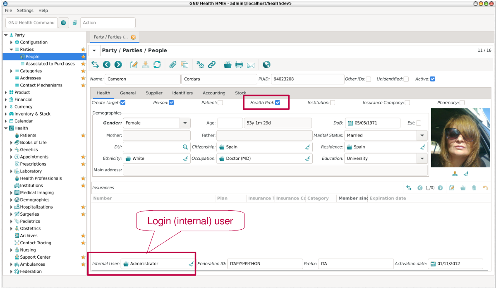
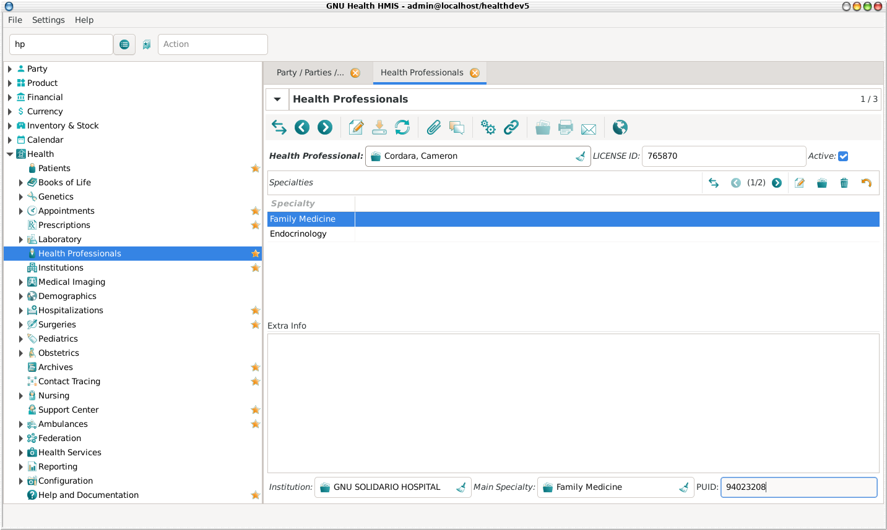

Health Professionals
The Health Professional Concept
The health professional is one of GNU Health’s key components: It’s used in appointments, patient evaluation, surgeries, lab tests, etc. This is why it is important to have them defined in your system before hand.
The health professional is a general concept: It covers physicians, nurses, biochemists, psychologists, and any other occupation related to health sciences.
Creating and Editing Health Professionals
The Main steps involved in defining a Health Professional are:
Select (or create) the related party
Associate an internal user (login user) to the party
Define the health professional list of specialties
Set the default or main specialty
To list or update the health professionals in your institution, follow this path: Health → Health Professionals
Alternatively, you can use the command ‘hp’ from the command line:
Command line: HP
Party associated to a Health Professional
The health professional is a party with specific attributes. This abstract concept of party allow us to be different entities at the same time. For example, a health professional can also be a patient; both entities sharing the property of being a person. The party concept provides versatility and simplicity to GNU Health.
A health professional party need the Person and health professional attributes to be set.
At this point, you need to enter the Health Professional demographics, in the same way as you have done when creating an individual. You might want to refresh the idea by glancing over the Individuals section.
The Internal User field
The “internal user” field is the user that the individual types in then logging into GNU Health. That user allows to digitally sign documents, and to audit their actions.
You need to associate the health professional with the login (internal) user.


Once you are done with the party, save the party record ( Ctrl + S ).
Health Professional specific fields
A health professional might have more than one specialty. In the Health Professional view, you can add all the specialties related to this particular professional. Once you are done, save the record ( Ctrl + S ). This is important so the system links the party with the health professional record.
Finally, add the information related to the professional:
Institution
Practitioner ID
Main Specialty
Extra information


Although these fields are not formally required, they are important and should be entered in the system. Each health professional should have these fields filled in whenever possible. For instance, the Main Specialty field will be used as a default value whenever the doctor is assigned an appointment, or when creating a new evaluation.